Цепь Маркова — последовательность случайных событий с конечным или счётным числом исходов, где вероятность наступления каждого события зависит от состояния, достигнутого в предыдущем событии.
Характеризуется тем свойством, что, говоря нестрого, при фиксированном настоящем будущее независимо от прошлого.
Названа в честь А. А. Маркова (старшего), который впервые ввёл это понятие в работе 1906 года.
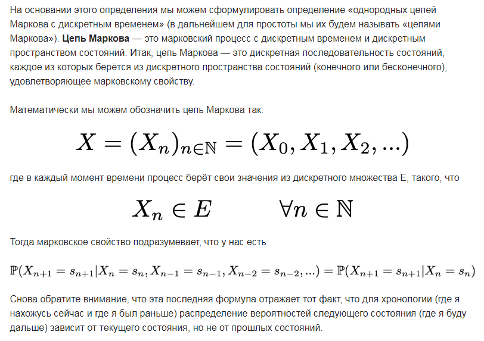 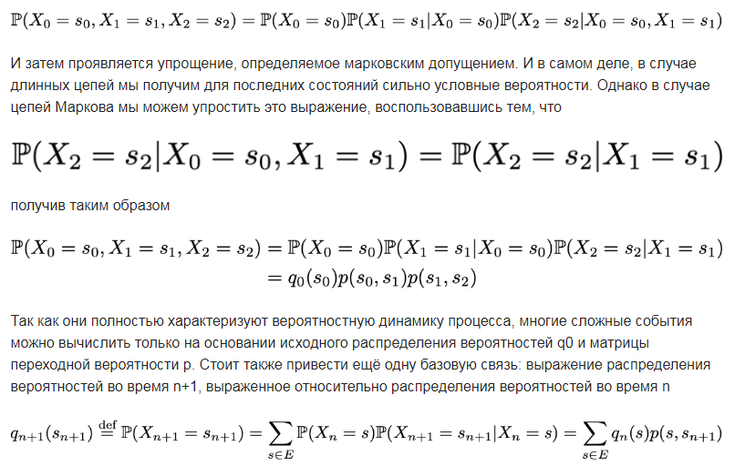
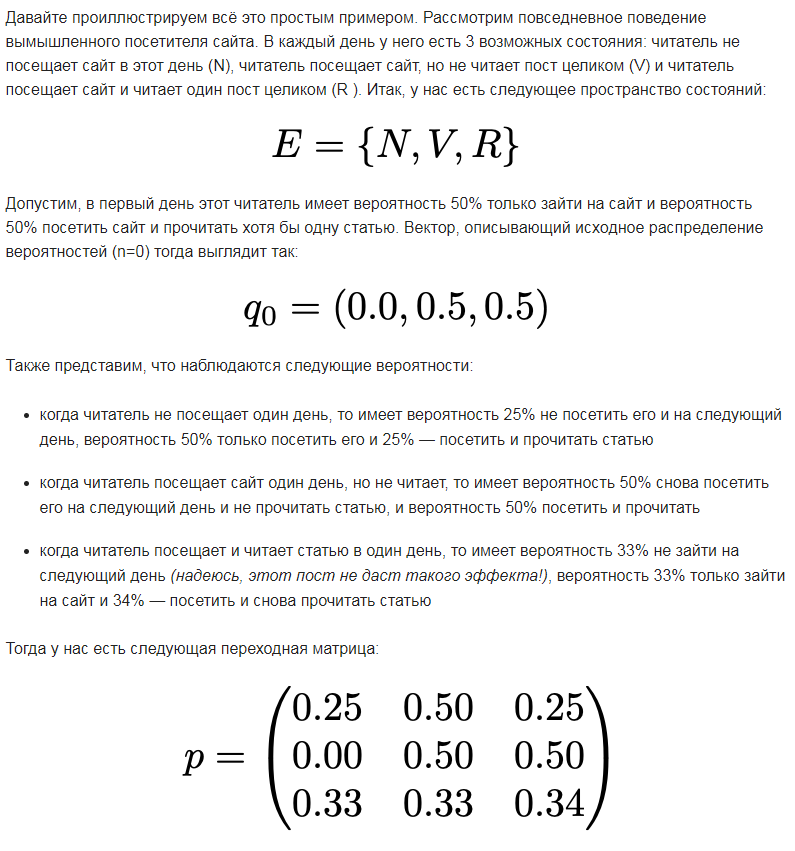
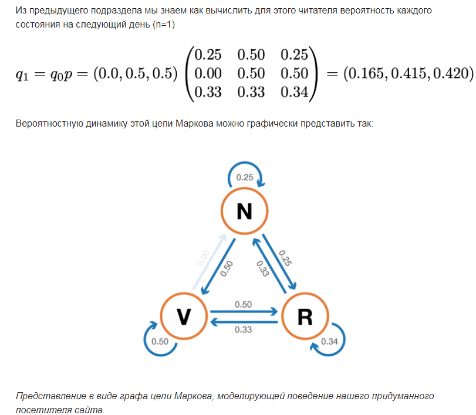
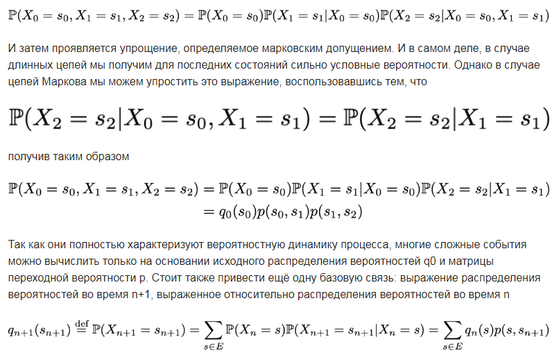
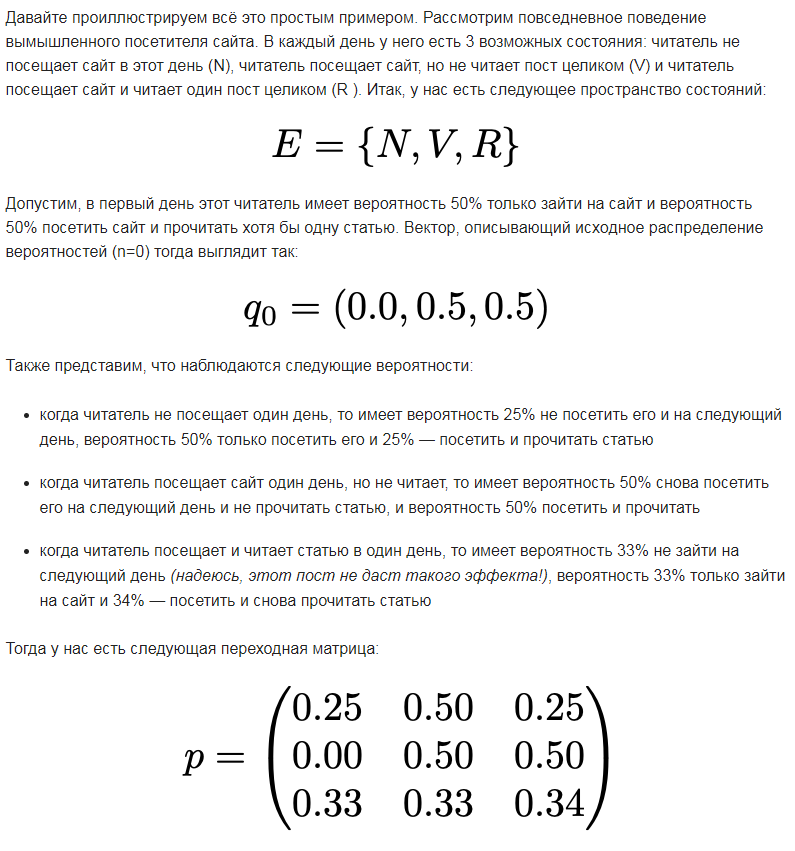
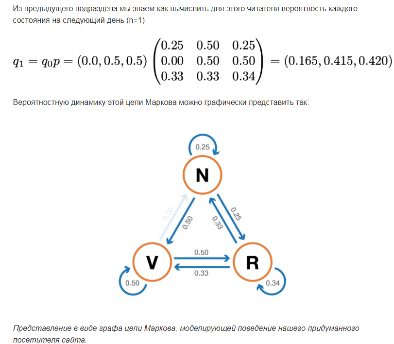
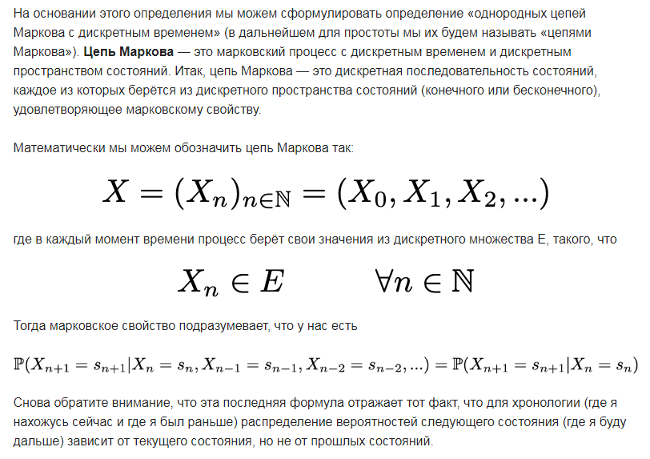
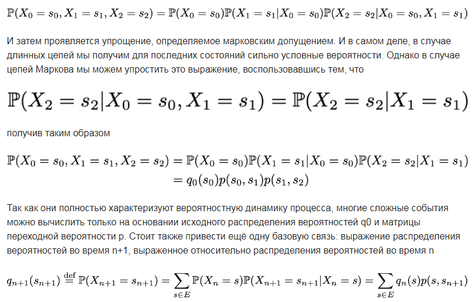
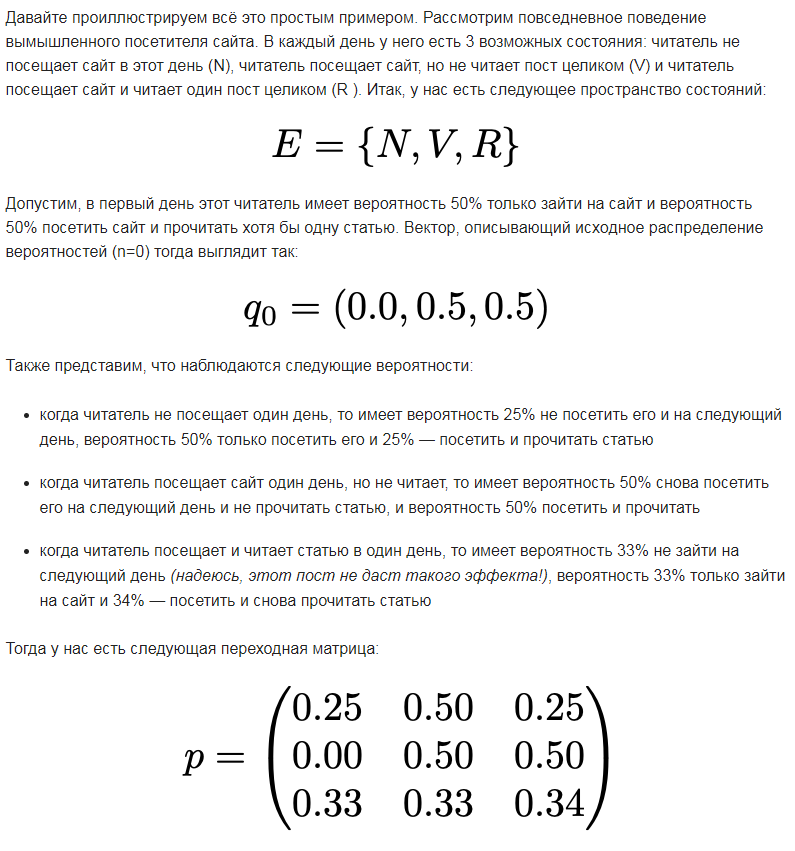
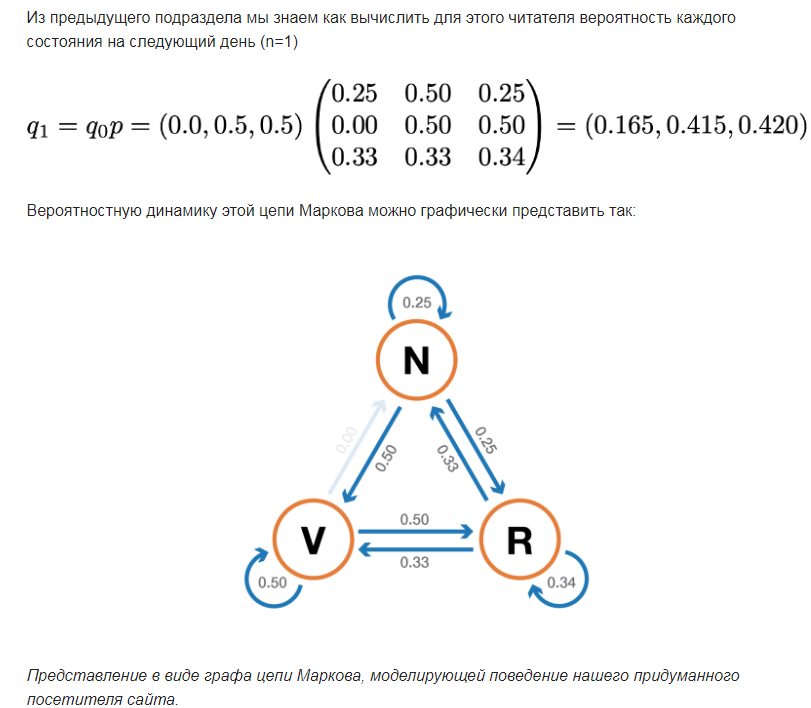
Введите размер матрицы состояний:
Введите кол-во итераций (от 1 до 100):
Введите кол-во знаков после запятой.